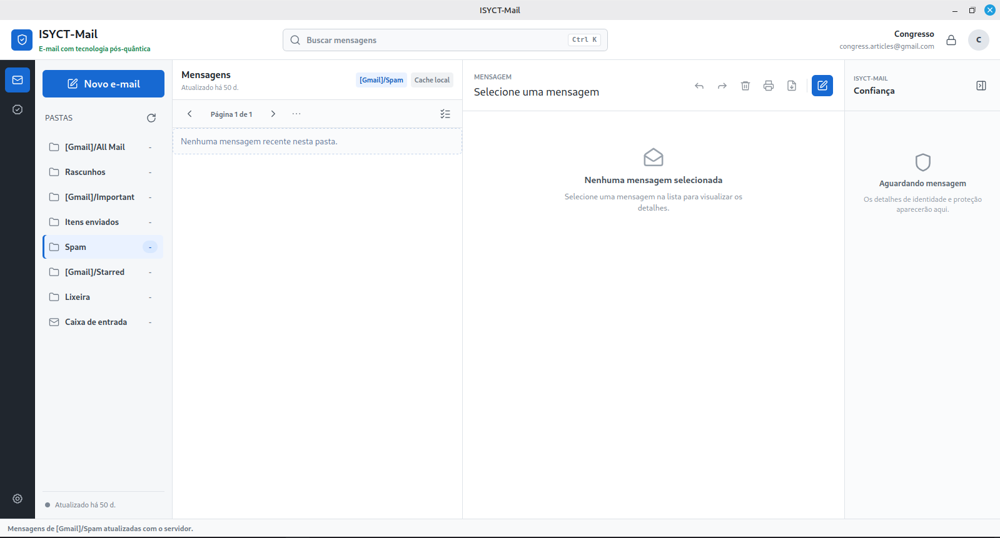

Fluxo convencional
O servidor participa do conteúdo
- Assunto e corpo podem ser processados no servidor
- Anexos ficam disponíveis à infraestrutura do provedor
- TLS protege conexões, não os pontos finais
O ISYCT-Mail acrescenta criptografia ponta a ponta pós-quântica ao fluxo tradicional de e-mail, preservando SMTP, IMAP e provedores existentes.
ELF · x86-6444,2 MiBSHA-256
Servidor cegoO provedor transporta, mas não abre.
Pós-quânticoML-KEM e ML-DSA padronizados.
CompatívelSMTP, IMAP e MIME continuam em uso.
Controle localChaves e mensagens no SQLCipher.
No e-mail convencional, a conexão pode ser cifrada e ainda assim o conteúdo chegar em texto claro ao provedor. A proposta desloca a fronteira de confiança para o cliente do usuário.
As operações sensíveis ficam no backend Rust. O provedor mantém sua função original: autenticar a conta, transportar, armazenar e sincronizar o envelope cifrado.
A WebView solicita operações por comandos Tauri, mas não recebe chaves privadas.
Identidade, confiança, criptografia e validação são aplicadas fora da camada visual.
SMTP, IMAP e MIME carregam o envelope sem precisar conhecer seu conteúdo.
SQLCipher protege mensagens, identidades, vínculos e chaves no armazenamento local.
O conteúdo é serializado e cifrado uma única vez. Cada destinatário recebe somente uma forma independente de recuperar a chave de conteúdo, reduzindo duplicação e preservando o controle de acesso.
O ISYCT-Mail separa consistência criptográfica, ciclo de vida e confiança. Um bundle importado entra em quarentena até que uma evidência independente vincule endereço, DID e chaves.
Pares ML-KEM e ML-DSA gerados localmente; o DID deriva das chaves públicas.
Documento canônico e fingerprint permitem detectar inconsistências sem expor segredos.
Mensagens encadeadas e comparação fora de banda mitigam substituição ativa de chaves.
Novos pares criam outro DID; chaves antigas permanecem apenas para mensagens históricas.
Cada cenário foi executado 100 vezes em modo release, após cinco ciclos de aquecimento. Selecione um ensaio para explorar os resultados.
Por que 100 repetições? O planejamento adotou intervalo bilateral de 95%, semiamplitude de até 10% da média e coeficiente de variação conservador de 50%, resultando em mínimo aproximado de 97 observações.
Conta, caixa postal, composição, identidades e estabelecimento de confiança convivem na mesma aplicação desktop.

Executável experimental de 64 bits para avaliação acadêmica. O arquivo é fornecido sem instalador e pode exigir bibliotecas compatíveis no sistema.
Baixar isyct_mail 44,2 MiB Baixar manual do usuário PDF · Português!Protótipo de pesquisa: não substitui uma solução auditada para uso crítico.
chmod +x isyct_mail
./isyct_mail4479a4d922302adc7c28fc1694f37f321498bff41c158a502fd657267bf9416c
Não. A proposta utiliza SMTP, IMAP e MIME convencionais. O protótipo foi avaliado com Gmail, mas a leitura protegida exige outro cliente compatível com o Envelope V4.
Ele recebe e pode armazenar o arquivo .isyct, mas precisa de um cliente que implemente o formato e da chave privada correspondente a um slot autorizado para abrir o conteúdo.
Não. Metadados de transporte continuam visíveis e o formato não oferece sigilo futuro. O objetivo é proteger o conteúdo contra o acesso pelo servidor dentro do modelo de ameaça documentado.